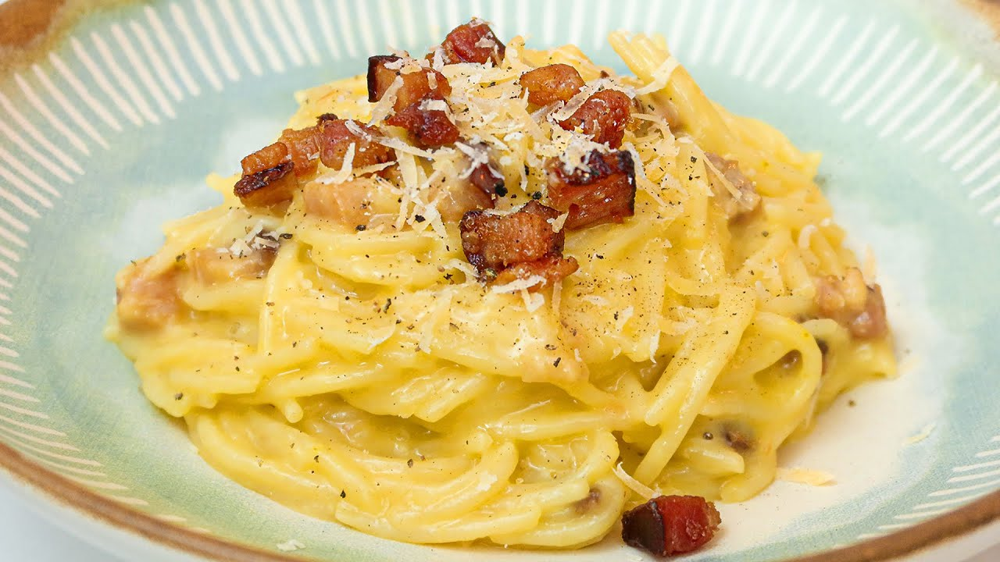

Carbonara

A teoria mais aceita nos EUA é, compreensivelmente, que a receita surgiu dos soldados
norte-americanos na Itália, que possuíam em sua ração diária ovo em pó e bacon e os
utilizavam para reforçar essa massa. Embora faça sentido, é uma história comumente descartada
no restante do mundo.
Ingredientes
- bacon picado a gosto
- queijo ralado a gosto
- 3 ovos
- sal
- pimenta do reino a gosto
- macarrao de sua escolha
- creme de leite se quiser...
- Frite bem o bacon, ate ficar crocante
- Coloque o macarrao para cozinhar em agua e sal
- No refratario onde sera servido o macarrao bata bem os ovos com um garfo
- Tempere com sal e pimenta a gosto, e junto o queijo ralado, tambem a gosto.
- Quando o macarrao estiver pronto, escorra e coloque sobre a mistura de ovos, misture bem
- O calor da massa cozinha os ovos.
- Coloca o bacone e prnto foda se